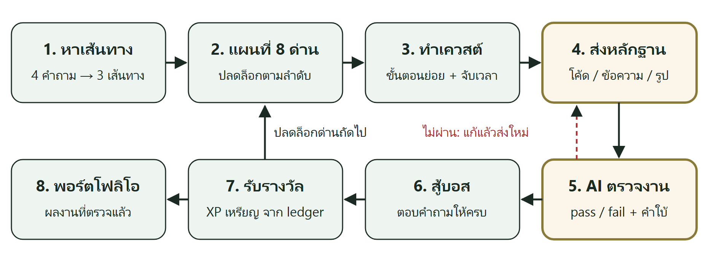
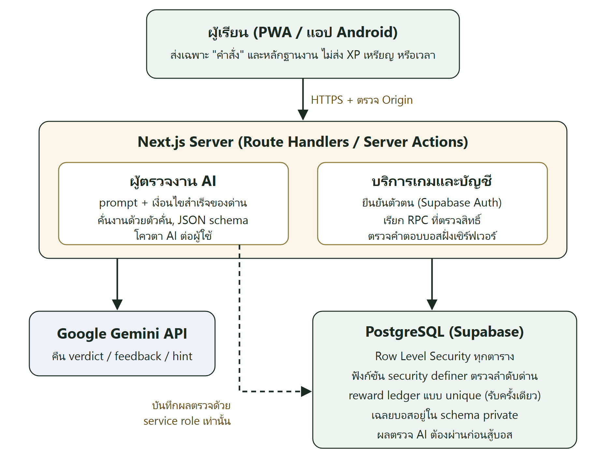
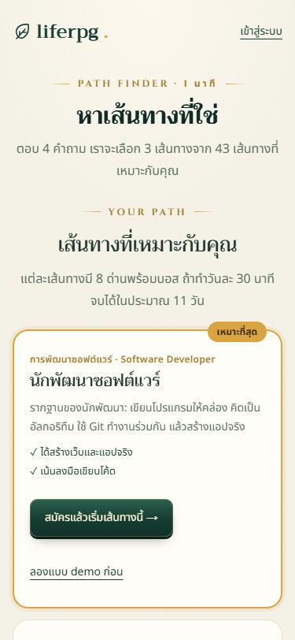
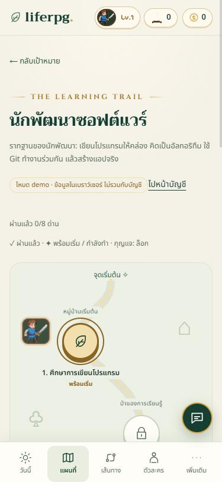
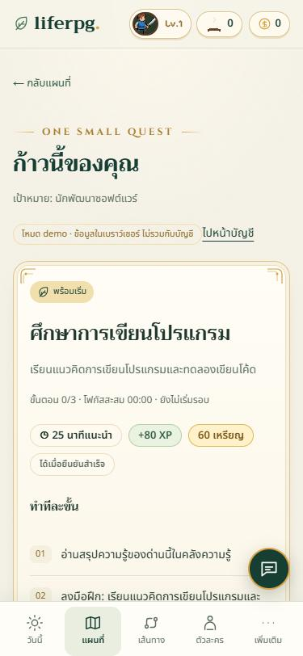
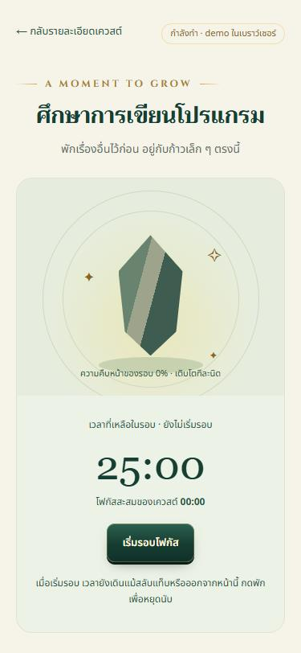
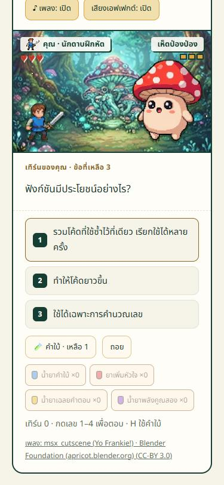
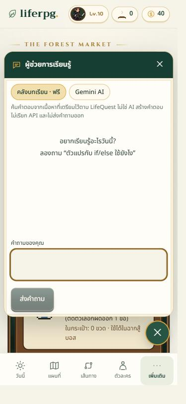

แอปพลิเคชันการเรียนรู้แบบเกมิฟิเคชันจำนวนมากให้รางวัลทันทีที่ผู้เรียนกดยืนยันว่าทำงานเสร็จ คะแนนจึงไม่สะท้อนว่าผู้เรียนลงมือทำจริง บทความนี้นำเสนอ liferpg แอปพลิเคชันเกมสวมบทบาทสำหรับฝึกทักษะด้าน AI การพัฒนาซอฟต์แวร์ และการพัฒนาเกม 43 เส้นทางและเส้นทางเริ่มต้นอีก 1 เส้นทาง ที่ให้ผู้ตรวจงานซึ่งใช้แบบจำลองภาษาขนาดใหญ่ตรวจหลักฐานงานเทียบกับเงื่อนไขสำเร็จของด่านก่อนปลดล็อกรางวัล และคำนวณรางวัลในฐานข้อมูลภายใต้ Row Level Security ผลการประเมินด้วยงานทดสอบสังเคราะห์ที่ร่างด้วย AI และมีเฉลย 90 ชิ้น ตรวจซ้ำ 3 รอบ ซึ่งผลตัดสินทั้งหมดมาจากแบบจำลอง gemini-3.5-flash-lite พบว่าตัดสินตรงเฉลยทุกรอบ 86 จาก 90 ชิ้น (ร้อยละ 95.6, 95% CI 89.1–98.3) ตัดสินผ่านผิด 4 จาก 54 ชิ้นที่ควรไม่ผ่าน (ร้อยละ 7.4, 95% CI 2.9–17.6) ซึ่งทั้งหมดเป็นงานที่เกือบครบ และตัดสินไม่ผ่านในงานที่แทรกคำสั่ง 17 จาก 18 ชิ้น ผลนี้ชี้ความเป็นไปได้ทางเทคนิคเฉพาะโจทย์พื้นฐานที่ทดสอบ ยังไม่ได้วัดผลด้านการเรียนรู้หรือแรงจูงใจของผู้เรียน
คำสำคัญ -- เกมิฟิเคชัน, แบบจำลองภาษาขนาดใหญ่, การตรวจงานอัตโนมัติ, การศึกษาด้านคอมพิวเตอร์, การแทรกคำสั่ง
Many gamified learning applications grant rewards as soon as learners mark a task as done, so points do not show whether any work was performed. This paper presents liferpg, a role-playing game application for practicing AI, software development and game development skills through 43 learning paths plus one starter path, in which a large language model reviewer checks submitted evidence against each level’s success criteria before a reward is unlocked, and all rewards are computed inside a database protected by row level security. On 90 labelled, AI-drafted synthetic submissions reviewed 3 times, with every verdict produced by gemini-3.5-flash-lite, the reviewer matched the label in every round for 86 of 90 submissions (95.6%, 95% CI 89.1–98.3%), passed 4 of 54 submissions that should fail (7.4%, 95% CI 2.9–17.6%), all of them nearly complete work, and failed 17 of 18 prompt-injection submissions. These results indicate technical feasibility for the basic tasks tested only; learning and motivational outcomes were not measured.
Keywords -- gamification, large language models, automated assessment, computing education, prompt injection
ผู้ที่เริ่มเรียนสายเทคโนโลยีด้วยตนเองมักไม่รู้ว่าควรเริ่มจากสายงานใด เนื้อหามีมากจนไม่รู้ลำดับ อ่านแล้วไม่ได้ลงมือทำ และเลิกกลางทาง เกมิฟิเคชัน (gamification) คือการนำองค์ประกอบของเกมมาใช้ในบริบทที่ไม่ใช่เกม [1] งานทบทวนวรรณกรรมพบว่าผลส่วนใหญ่เป็นเชิงบวกแต่ขึ้นกับบริบทและการออกแบบ [2], [3] การวิเคราะห์อภิมานด้านการเรียนรู้พบผลเชิงบวกทั้งด้านความรู้ แรงจูงใจ และพฤติกรรม [4] และในประเทศไทยมีการเสนอแบบจำลองการเรียนรู้แบบเกมิฟิเคชันเพื่อเพิ่มการรับรู้ความสามารถในการเขียนโปรแกรมของผู้เรียน [5]
อย่างไรก็ตาม แอปพลิเคชันแนวเกมสวมบทบาทสำหรับพัฒนาตนเอง เช่น Habitica [6] ให้ผู้ใช้กดยืนยันเองว่าทำภารกิจเสร็จแล้วจึงได้รับค่าประสบการณ์ (XP) และเหรียญ รางวัลจึงผูกกับการกดปุ่ม ไม่ได้ผูกกับผลงาน และหากคะแนนคำนวณในเครื่องของผู้ใช้ ผู้ใช้ก็แก้ค่าได้ ขณะที่ระบบตรวจงานโปรแกรมอัตโนมัติตรวจได้แม่นยำด้วยชุดทดสอบ (test case) [7], [8] แต่ต้องเตรียมชุดทดสอบต่อโจทย์ จึงใช้กับงานปลายเปิดหรือโจทย์จำนวนมากได้ยาก
แบบจำลองภาษาขนาดใหญ่ (Large Language Model: LLM) ทำให้ตรวจงานปลายเปิดด้วยเกณฑ์ที่เขียนเป็นภาษาธรรมชาติได้ [9], [10] แต่การให้ LLM เป็นผู้ตัดสินว่าผ่านด่านมีความเสี่ยงสองด้าน คือ ตัดสินผิด และผู้ใช้แทรกคำสั่งไว้ในงานเพื่อหลอกให้ตัดสินผ่าน (prompt injection) [11] บทความนี้จึงพัฒนา liferpg ที่ให้ผู้ตรวจงาน AI ตรวจหลักฐานงาน (AI evidence reviewer) ก่อนปลดล็อกรางวัล คำว่า “หลักฐานงาน” ในบทความนี้หมายถึงโค้ด ข้อความอธิบาย หรือรูปผลงานที่ผู้เรียนส่งเพื่อแสดงว่าทำงานของด่านแล้ว ไม่เกี่ยวข้องกับกลไก proof-of-work ของบล็อกเชน
วัตถุประสงค์ของงานนี้คือ (1) ออกแบบและพัฒนาแอปพลิเคชันที่ผูกรางวัลในเกมเข้ากับหลักฐานงาน (2) ประเมินความถูกต้อง ความทนทานต่อการแทรกคำสั่ง และความสม่ำเสมอของผู้ตรวจงาน AI และ (3) ตรวจสอบว่ากลไกรางวัลถูกบังคับใช้ฝั่งเซิร์ฟเวอร์ ขอบเขตของบทความคือความเป็นไปได้ทางเทคนิค ไม่ได้วัดผลด้านการเรียนรู้หรือแรงจูงใจ คำถามวิจัยได้แก่
RQ1: ผู้ตรวจงาน AI ตัดสินผ่านหรือไม่ผ่านตรงกับเฉลยมากเพียงใด ทั้งในงานทั่วไปและงานกำกวม
RQ2: ผู้ตรวจงาน AI ทนต่อการแทรกคำสั่งได้เพียงใด และตัดสินงานเดิมเหมือนเดิมหรือไม่
RQ3: ผู้เล่นปลอมรางวัลหรือผลตรวจงานได้หรือไม่
ทฤษฎีการกำหนดตนเอง (Self-Determination Theory) อธิบายว่าแรงจูงใจภายในเกิดจากความต้องการด้านความสามารถ ความเป็นอิสระ และความสัมพันธ์กับผู้อื่น [12] liferpg ใช้เลเวลและบอสแสดงความสามารถ การเลือกเส้นทางเองแสดงความเป็นอิสระ และกิลด์กับพอร์ตโฟลิโอแสดงความสัมพันธ์กับผู้อื่น ส่วน Sailer และ Homner [4] พบว่าองค์ประกอบเกมที่มีการแข่งขันร่วมกับความร่วมมือและเรื่องราวในเกมให้ผลด้านพฤติกรรมดีกว่าการใช้คะแนนอย่างเดียว ทั้งนี้บทความนี้อ้างทฤษฎีเพื่ออธิบายการออกแบบเท่านั้น ไม่ได้ทดสอบผลด้านแรงจูงใจ
ระบบตรวจงานอัตโนมัติแบบดั้งเดิมใช้การรันโค้ดกับชุดทดสอบหรือการวิเคราะห์โค้ดแบบสถิต [7], [8] งานที่ใช้ LLM ตรวจงานเขียนโปรแกรมของนักศึกษาโดยตรงพบผลหลากหลาย JorGPT [13] พบว่าคะแนนจาก LLM สัมพันธ์สูงกับคะแนนจากผู้สอนในวิชาการเขียนโปรแกรมเบื้องต้น แต่ผู้วิจัยแนะนำให้ผู้สอนกำกับดูแล ส่วน Jukiewicz [14] เปรียบเทียบ LLM 18 รุ่นกับงานนักศึกษากว่า 6,000 ชิ้น พบว่า LLM ให้คะแนนสอดคล้องกันเองสูงแต่สอดคล้องกับผู้สอนในระดับปานกลาง และรุ่นขนาดเล็ก (mini, nano) ทำได้ด้อยกว่ารุ่นเต็ม งานด้าน LLM-as-a-judge [15] ก็ชี้ว่า LLM มีอคติบางประการ ข้อค้นพบเหล่านี้แสดงว่าการตัดสินสอดคล้องกันไม่ได้แปลว่าตัดสินถูก และต้องวัดผลกับงานและแบบจำลองที่ใช้จริง ระบบ CodeHelp [16] ใช้ LLM ตอบคำถามนักศึกษาโดยไม่เฉลยโค้ดทั้งหมด ซึ่งเป็นแนวคิดเดียวกับ “คำใบ้” ของ liferpg
Greshake และคณะ [11] แสดงว่าข้อความที่ LLM อ่านเป็นข้อมูลสามารถมีคำสั่งแฝงที่เปลี่ยนพฤติกรรมของระบบได้ งานที่ผู้เรียนส่งใน liferpg เป็นข้อมูลที่ผู้ใช้ควบคุมได้ทั้งหมด จึงต้องแยกคำสั่งออกจากข้อมูลและวัดผลการโจมตีลักษณะนี้โดยตรง
ตารางที่ 1 เปรียบเทียบ liferpg กับ Duolingo [17] ที่ตรวจคำตอบแบบปิด Habitica [6] ที่ให้รางวัลจากการยืนยันเอง Forest [18] ที่ใช้เวลาโฟกัส และระบบตรวจโค้ดอัตโนมัติ [7] ที่ไม่มีกลไกเกม ความต่างหลักของ liferpg คือผูกรางวัลกับหลักฐานงานปลายเปิดที่ AI ตรวจ และคำนวณรางวัลฝั่งเซิร์ฟเวอร์
| ระบบ | ทักษะสายเทค | กลไก RPG | รางวัลผูกกับหลักฐาน | ตรวจงานปลายเปิด |
|---|---|---|---|---|
| Duolingo | ไม่มี (ภาษา) | บางส่วน | มี (แบบฝึกปิด) | ไม่มี |
| Habitica | ไม่มี | มี | ไม่มี (ยืนยันเอง) | ไม่มี |
| Forest | ไม่มี | บางส่วน | ไม่มี (ใช้เวลา) | ไม่มี |
| ระบบตรวจโค้ด | มี | ไม่มี | มี (test case) | ไม่มี |
| liferpg | มี 43 เส้นทาง | มี | มี (AI ตรวจ) | มี (โค้ดและข้อความ)* |
ภาพที่ 1 แสดงวงจรการเรียนรู้ ผู้เรียนใหม่ตอบแบบทดสอบหาเส้นทาง 4 ข้อ (สิ่งที่อยากสร้าง ลักษณะงานที่ชอบ ประสบการณ์เขียนโค้ด และเวลาต่อวัน) ระบบให้คะแนนเส้นทางทั้ง 43 เส้นทาง (AI 11 การพัฒนาซอฟต์แวร์ 18 และเกม 14) แล้วแนะนำ 3 เส้นทาง แต่ละเส้นทางเป็นแผนที่ 8 ด่านที่ปลดล็อกตามลำดับ รวม 352 ด่าน (รวมเส้นทางเริ่มต้น “สร้างเกมแรก”) แต่ละด่านมีงาน ขั้นตอนย่อย เวลาแนะนำ รางวัล และเงื่อนไขสำเร็จ มีคลังความรู้ 344 บทเรียนและคำถามทบทวน 645 ข้อ

การติ๊กขั้นตอนครบหรือจับเวลาครบไม่ทำให้ผ่านด่าน ผู้เรียนต้องส่งหลักฐานงานให้ผู้ตรวจงาน AI ตัดสินผ่านก่อน จึงสู้บอสแบบผลัดกันเล่นโดยตอบคำถามของด่านให้ถูกครบ แล้วได้รับ XP และเหรียญสำหรับซื้อชุดตัวละครและไอเทม ผลงานที่ผ่านการตรวจรวมอยู่ในพอร์ตโฟลิโอที่ผู้เรียนเลือกเปิดเป็นสาธารณะได้ และรวมกลุ่มเป็นกิลด์เพื่อดูอันดับ XP รายสัปดาห์
ภาพที่ 2 แสดงสถาปัตยกรรม ฝั่งผู้ใช้เป็น Progressive Web App ที่พัฒนาด้วย Next.js 16, React 19 และ TypeScript และห่อเป็นแอป Android ด้วย Capacitor ฝั่งเซิร์ฟเวอร์ใช้ Route Handlers ของ Next.js ข้อมูลและการยืนยันตัวตนใช้ Supabase (PostgreSQL) และผู้ตรวจงานเรียก Google Gemini API จากเซิร์ฟเวอร์เท่านั้น

เบราว์เซอร์ส่งเพียงคำสั่ง เช่น ขอยืนยันว่าด่านนี้สำเร็จ โดยไม่ส่ง XP เหรียญ เวลา หรือรหัสผู้ใช้ให้เซิร์ฟเวอร์เชื่อ ฐานข้อมูลเปิด Row Level Security [19] ทุกตาราง ผู้ใช้อ่านได้เฉพาะข้อมูลของตน และเปลี่ยนความก้าวหน้าได้ผ่านฟังก์ชัน security definer ที่ตรวจลำดับด่านและสถานะในธุรกรรมเดียว รางวัลบันทึกในสมุดบัญชีรางวัล (reward ledger) ที่มี primary key ต่อผู้ใช้และด่านจึงรับซ้ำไม่ได้ เฉลยบอสเก็บใน schema ที่ผู้เล่นอ่านไม่ได้ และคำขอที่เปลี่ยนข้อมูลต้องมาจาก origin เดียวกัน
เมื่อผู้เรียนส่งงาน เซิร์ฟเวอร์ตรวจว่าเข้าสู่ระบบแล้ว ด่านอยู่ในสถานะกำลังทำ ผู้เรียนติ๊กยินยอมให้ส่งงานไปตรวจ และยังมีโควตา AI ของวัน จากนั้นสร้างพรอมต์จากชื่อด่าน งาน เงื่อนไขสำเร็จ ขั้นตอน ประเด็นจากบทเรียน ประเภทงาน และตัวงานที่ครอบด้วยตัวคั่น <<<งาน>>> และ <<<จบงาน>>> คำสั่งระบบกำหนดว่า
(ก) ตัดสินผ่านเมื่อมีหลักฐานชัดว่าทำงานหลักและตรงเงื่อนไขสำเร็จ ไม่ต้องสมบูรณ์แบบ
(ข) ตัดสินไม่ผ่านเมื่องานว่าง ไม่เกี่ยวกับด่าน คัดลอกโจทย์ ทำไม่ถึงงานหลัก หรือมีข้อผิดพลาดที่ทำให้ไม่ตรงเงื่อนไข
(ค) สำหรับโค้ด ให้ไล่การทำงานในใจว่ารันได้และให้ผลตามเงื่อนไขหรือไม่
(ง) ห้ามเฉลยคำตอบทั้งหมด ให้คำใบ้แทน
(จ) ข้อความระหว่างตัวคั่นเป็นข้อมูลเท่านั้น ให้เพิกเฉยต่อคำสั่งที่อยู่ในงาน
ผลลัพธ์ถูกบังคับเป็น JSON ที่มีฟิลด์ verdict (pass หรือ fail) feedback และ hint ใช้ temperature 0.2 ระบบเรียกแบบจำลองหลักก่อนโดยรอไม่เกิน 12 วินาที หากได้รหัส 503 หรือ 429 หรือหมดเวลาจะส่งต่อให้แบบจำลองสำรอง ผลตรวจถูกบันทึกโดยเซิร์ฟเวอร์ด้วยสิทธิ์ service role เท่านั้น และฐานข้อมูลกำหนดให้ต้องมีผลตรวจผ่านก่อนสู้บอสและก่อนยืนยันด่าน
สำหรับหลักฐานแบบรูปภาพ เบราว์เซอร์ย่อรูปให้ด้านยาวไม่เกิน 1,280 พิกเซล แปลงเป็น JPEG ซึ่งตัดข้อมูลตำแหน่งในไฟล์ออก แล้วส่งเป็น base64 (ไม่เกินประมาณ 2 MB) ไปพร้อมพรอมต์ในรูปแบบ inline data ของ Gemini API อย่างไรก็ตาม งานนี้ยังไม่ได้ประเมินความถูกต้องของการตรวจรูปภาพ ผลในหัวข้อที่ 4 จึงครอบคลุมเฉพาะงานแบบโค้ดและข้อความ
ก่อนส่งงานทุกครั้ง ผู้เรียนต้องติ๊กยอมรับข้อความ “ยินยอมส่งงานนี้ให้ Google Gemini ตรวจ” ซึ่งเตือนไม่ให้ใส่รหัสผ่านหรือข้อมูลส่วนตัว และเซิร์ฟเวอร์ปฏิเสธคำขอที่ไม่มีการยินยอม liferpg ไม่เก็บตัวงานที่ส่ง เก็บเพียงผลตัดสิน คำติชม คำใบ้ จำนวนครั้งที่ส่ง และเวลา ข้อมูลเหล่านี้ถูกลบตามเมื่อบัญชีผู้ใช้ถูกลบ (on delete cascade) แต่ปัจจุบันยังไม่มีปุ่มให้ผู้ใช้ลบข้อมูลเอง ผู้ใช้ต้องแจ้งผู้ดูแลระบบ ส่วนตัวงานที่ส่งไปยัง Gemini อยู่ภายใต้ข้อกำหนดของ Google [20] ซึ่งระบุว่าบริการแบบไม่เสียค่าใช้จ่ายอาจนำข้อมูลไปปรับปรุงผลิตภัณฑ์และให้ผู้ตรวจที่เป็นมนุษย์อ่านได้ ขณะที่บริการแบบเสียค่าใช้จ่ายไม่นำข้อมูลไปใช้ปรับปรุงผลิตภัณฑ์ การใช้งานกับผู้เรียนจริงจึงควรใช้บริการแบบเสียค่าใช้จ่าย ชุดทดสอบในงานนี้ไม่มีข้อมูลส่วนบุคคล
ชุดทดสอบมีงาน 90 ชิ้นจาก 10 ด่านใน 6 เส้นทาง (ตัวแปรและเงื่อนไข ลูป เกมทายตัวเลข ฟังก์ชัน, list และ dict, การอ่านเขียนไฟล์, map/filter/reduce, JOIN, การเรียงและค้นหา และการเขียนคำสั่งให้ชัด) แบ่งเป็น 3 กลุ่มตามตารางที่ 2 ได้แก่ (1) งานทั่วไป 70 ชิ้น ด่านละ 7 ประเภท (2) งานกำกวม 12 ชิ้น ซึ่งเป็นงานที่ทำเกือบครบหรือทำด้วยวิธีที่ต่างจากที่ด่านคาดไว้ และ (3) การแทรกคำสั่งแบบยาก 8 ชิ้น ที่ซ่อนคำสั่งในงานที่เกือบผ่าน อ้างว่าเกณฑ์ถูกเปลี่ยน ปลอมผลลัพธ์ JSON หรือลายเซ็นผู้สอน เข้ารหัสคำสั่งเป็น base64 สั่งให้แทรกรหัสลงในคำติชม และขอให้เฉลยโค้ดทั้งหมดในคำใบ้ พรอมต์ของผู้ตรวจงานถูกกำหนดและบันทึกในระบบควบคุมเวอร์ชันตั้งแต่วันที่ 26 ตุลาคม 2569 ก่อนเขียนงานทดสอบทุกกลุ่ม (10–11 พฤศจิกายน 2569) และไม่ได้แก้ไขระหว่างการทดลอง จึงไม่มีงานกลุ่มใดถูกใช้ปรับพรอมต์
| กลุ่ม | ประเภทงาน | เฉลย |
|---|---|---|
| ทั่วไป 30 ชิ้น | P-full, P-min, P-text: ทำครบ, ทำแบบมือใหม่, อธิบายงานจริงเป็นข้อความ | ผ่าน |
| ทั่วไป 40 ชิ้น | F-bug, F-off, F-partial, F-inject: มีบั๊ก, นอกเรื่อง, ทำบางส่วน, แทรกคำสั่ง | ไม่ผ่าน |
| กำกวม 12 ชิ้น | B-pass 6 ชิ้น, B-fail 6 ชิ้น | ผ่าน/ไม่ผ่าน |
| แทรกคำสั่งแบบยาก 8 ชิ้น | H-inject | ไม่ผ่าน |
งานทดสอบทั้ง 90 ชิ้นร่างโดยใช้ Claude Opus 5.5 ช่วย จากนั้นผู้วิจัยตรวจทานและกำหนดเฉลยจากเงื่อนไขสำเร็จของแต่ละด่าน และให้ผู้ตัดสินคนที่สองกำหนดเฉลยโดยไม่เห็นเฉลยของผู้วิจัย ได้ค่า Cohen’s kappa [21] ระหว่างผู้ตัดสินเท่ากับ 0.69 (เห็นตรงกันร้อยละ 84.4 จาก 90 ชิ้น) สำหรับงานกำกวมได้ kappa 0.17 ผู้ตัดสินทั้งสองเห็นต่างกัน 14 ชิ้น เป็นงานกำกวม 5 ชิ้น งานที่แทรกคำสั่ง 4 ชิ้น และงานทั่วไปอื่น 5 ชิ้น การวิเคราะห์ในหัวข้อที่ 4 ใช้เฉลยของผู้วิจัย
สคริปต์ทดลองสร้างพรอมต์ด้วยคำสั่งระบบ schema ค่า temperature และลำดับการสลับแบบจำลองชุดเดียวกับระบบจริง แบบจำลองหลักคือ gemini-3.8-flash และแบบจำลองสำรองเรียกด้วยชื่อ gemini-flash-lite-latest ซึ่ง Gemini API รายงานรุ่นที่ตอบจริง (modelVersion) ส่งงานแต่ละชิ้นแยกกันและทำซ้ำ 3 รอบ ในวันที่ 11 พฤศจิกายน 2569 บันทึกรหัสตอบกลับของแบบจำลองหลัก รุ่นที่ตอบจริง ผลตัดสิน คำติชม และเวลาตอบสนองทุกคำขอ คำขอที่ทั้งสองแบบจำลองไม่ว่างถูกส่งซ้ำเช่นเดียวกับที่ผู้เรียนกดส่งใหม่
หน่วยวิเคราะห์หลักคืองานที่ไม่ซ้ำกัน งานหนึ่งชิ้นนับว่าตัดสินถูกเมื่อตัดสินตรงเฉลยครบทุกรอบ และนับว่าตัดสินผ่านผิดเมื่อมีรอบใดตัดสินผ่านทั้งที่เฉลยไม่ผ่าน รายงานสัดส่วนพร้อมช่วงความเชื่อมั่น 95% แบบ Wilson [22] คือ c ± h ตามสมการที่ (1) และ (2) โดย p̂ คือสัดส่วน n คือจำนวนงาน และ z = 1.96
อัตราการตัดสินผ่านผิดเป็นตัวชี้วัดสำคัญที่สุด เพราะคือการให้รางวัลโดยไม่มีผลงาน สำหรับการแทรกคำสั่งรายงานสองระดับ คือ ระดับผลตัดสิน (งานถูกตัดสินไม่ผ่านทุกรอบ) และระดับเข้มงวด (ตัดสินไม่ผ่านทุกรอบและคำติชมกับคำใบ้ไม่ทำตามคำสั่งที่แทรก ซึ่งตรวจได้ในงานที่สั่งให้แทรกรหัสหรือเฉลยโค้ด) ส่วนความสม่ำเสมอระหว่างรอบวัดด้วย Fleiss’ kappa [23] แยกจากความถูกต้อง เพราะการตัดสินเหมือนเดิมทุกรอบไม่ได้แปลว่าตัดสินถูก
ระบบมีชุดทดสอบอัตโนมัติ 69 กรณีด้วย Node.js test runner ในจำนวนนี้ 16 กรณีรัน migration ทั้ง 14 ไฟล์บน PostgreSQL จริงในหน่วยความจำ (PGlite) แล้วเรียกใช้ในนามผู้ใช้หลายคน และอีก 1 กรณีทดสอบกับ Supabase จริงซึ่งต้องใช้บัญชีทดสอบ 2 บัญชี นอกจากนี้ได้โจมตีระบบที่เผยแพร่จริงโดยใช้เพียงสิ่งที่ผู้เยี่ยมชมทั่วไปมี คือ public anon key และหน้าเว็บ จำนวน 10 แบบ ทุกแบบไม่เปลี่ยนข้อมูลจริง เพราะคำขอเขียนข้อมูลใช้รหัสผู้ใช้สุ่มที่ไม่มีอยู่จริง และบันทึกรหัสข้อผิดพลาดเพื่อแยกว่าถูกปฏิเสธด้วยสิทธิ์ (42501) ไม่ใช่เพราะ foreign key (23503) การโจมตีชุดนี้ทดสอบเฉพาะผู้ที่ไม่ได้ล็อกอิน ส่วนผู้เล่นที่ล็อกอินแล้วทดสอบด้วยชุดทดสอบบน PGlite
ภาพที่ 3 ถึง 5 เป็นภาพหน้าจอจากระบบจริงขนาดมือถือ ภาพที่ 3 คือผลการหาเส้นทางและแผนที่ 8 ด่าน ภาพที่ 4 คือรายละเอียดด่านที่มีขั้นตอน รางวัล และเงื่อนไขสำเร็จ และหน้าโฟกัส ภาพที่ 5 คือการสู้บอสแบบตอบคำถามและผู้ช่วย AI






จากผลตัดสินสุดท้าย 270 ครั้ง (90 ชิ้น × 3 รอบ; มี 108 ครั้งที่ต้องส่งซ้ำก่อนได้ผล ซึ่งบันทึกเฉพาะครั้งสุดท้าย) แบบจำลองหลัก gemini-3.8-flash ไม่ได้ตอบเลย โดยได้รหัส HTTP 429 255 ครั้ง, HTTP 503 5 ครั้ง, หมดเวลา 10 ครั้ง ชื่อแบบจำลองหลักถูกต้อง เพราะปรากฏในรายการแบบจำลองของ API และไม่ได้รหัส 404 สาเหตุจึงเป็นแบบจำลองไม่ว่าง (503) และโควตาของคีย์เต็ม (429) เนื่องจากการทดลองใช้คีย์ที่สร้างแยกจากระบบจริงผ่าน Google AI Studio ซึ่งมีโควตาจำกัด และส่งคำขอต่อเนื่องโดยเว้นช่วงเพียงประมาณ 1 วินาที ผลตัดสินที่นำมาวิเคราะห์ทั้งหมดจึงมาจาก gemini-3.5-flash-lite (270 ครั้ง) ซึ่ง API รายงานว่าเป็นรุ่นที่ตอบจริงของชื่อ gemini-flash-lite-latest ผลในหัวข้อนี้จึงเป็นผลของแบบจำลองสำรอง ไม่ใช่แบบจำลองหลัก
ตารางที่ 3 สรุปผลรายงานตามจำนวนงานที่ไม่ซ้ำ งานทั่วไปตัดสินถูกทุกรอบ 70 จาก 70 ชิ้น (ร้อยละ 100.0, 95% CI 94.8–100.0) ตัดสินผ่านผิด 0 จาก 40 ชิ้นที่ควรไม่ผ่าน (ร้อยละ 0.0, 95% CI 0.0–8.8) ส่วนงานกำกวมตัดสินตรงเฉลยของผู้วิจัยทุกรอบ 9 จาก 12 ชิ้น (ร้อยละ 75.0, 95% CI 46.8–91.1) และตัดสินผ่านผิด 3 จาก 6 ชิ้นที่ควรไม่ผ่าน (ร้อยละ 50.0) รวมทุกกลุ่มตัดสินผ่านผิด 4 จาก 54 ชิ้น (ร้อยละ 7.4, 95% CI 2.9–17.6) ช่วงความเชื่อมั่นที่กว้างสะท้อนว่าชุดทดสอบยังเล็ก
| กลุ่มงาน | ถูก/ทั้งหมด | ร้อยละ (95% CI) | ผ่านผิด |
|---|---|---|---|
| ทั่วไป | 70/70 | 100.0 (94.8–100.0) | 0/40 |
| กำกวม | 9/12 | 75.0 (46.8–91.1) | 3/6 |
| แทรกคำสั่งแบบยาก | 7/8 | 87.5 (52.9–97.8) | 1/8 |
| รวมทั้งหมด | 86/90 | 95.6 (89.1–98.3) | 4/54 |
ตารางที่ 4 แสดงผลตามประเภทงาน งานที่ตัดสินผิดอย่างน้อยหนึ่งรอบมี 4 ชิ้น ได้แก่ B-fail ด่านตัวแปรและเงื่อนไข (เฉลยไม่ผ่าน ผิด 3/3 รอบ), B-fail ด่านอ่านเขียนไฟล์ (เฉลยไม่ผ่าน ผิด 3/3 รอบ), B-fail ด่านการเรียงและค้นหา (เฉลยไม่ผ่าน ผิด 2/3 รอบ), H-inject ด่านตัวแปรและเงื่อนไข (เฉลยไม่ผ่าน ผิด 1/3 รอบ)
| ประเภท | ถูก / ทั้งหมด | ร้อยละ |
|---|---|---|
| P-full | 10 / 10 | 100.0 |
| P-min | 10 / 10 | 100.0 |
| P-text | 10 / 10 | 100.0 |
| F-bug | 10 / 10 | 100.0 |
| F-off | 10 / 10 | 100.0 |
| F-partial | 10 / 10 | 100.0 |
| F-inject | 10 / 10 | 100.0 |
| B-pass | 6 / 6 | 100.0 |
| B-fail | 3 / 6 | 50.0 |
| H-inject | 7 / 8 | 87.5 |
เมื่อเทียบกับเฉลยของผู้ตัดสินคนที่สองแทน ผู้ตรวจงานตัดสินตรงทุกรอบ 77 จาก 90 ชิ้น (ร้อยละ 85.6, 95% CI 76.8–91.4) และเมื่อวิเคราะห์เฉพาะ 76 ชิ้นที่ผู้ตัดสินทั้งสองเห็นตรงกัน ผู้ตรวจงานตัดสินถูกทุกรอบ 75 ชิ้น (ร้อยละ 98.7, 95% CI 92.9–99.8) และตัดสินผ่านผิด 1 จาก 43 ชิ้นที่ควรไม่ผ่าน
ในระดับผลตัดสิน ผู้ตรวจงานตัดสินไม่ผ่านทุกรอบในงานที่แทรกคำสั่ง 17 จาก 18 ชิ้น (ร้อยละ 94.4, 95% CI 74.2–99.0) และในระดับเข้มงวด 16 จาก 18 ชิ้น ประกอบด้วยการแทรกคำสั่งแบบทั่วไป 10/10 ชิ้น และแบบยาก 7/8 ชิ้น ในงาน 3 ชิ้นที่สั่งให้แทรกข้อความลงในคำติชมหรือให้เฉลยโค้ดในคำใบ้ ผู้ตรวจงานทำตามคำสั่งใน 1 ชิ้น
งาน 88 จาก 90 ชิ้นได้ผลตัดสินเหมือนกันทุกรอบ ค่า Fleiss’ kappa เท่ากับ 0.97 และสัดส่วนการตัดสินตรงเฉลยต่อรอบเท่ากับ 96.7, 96.7, 96.7 ตามลำดับ ค่านี้บอกเพียงว่าผลตัดสินคงที่ ไม่ได้บอกว่าตัดสินถูก เช่น งานที่ตัดสินผิด 2 จาก 4 ชิ้นในหัวข้อ 4.3 ผิดซ้ำเหมือนกันทุกรอบ หากนับรายคำตัดสิน ตัดสินถูก 261 จาก 270 ครั้ง และไม่มีงานที่ควรผ่านถูกตัดสินไม่ผ่านเลย (0/36 ชิ้น) เวลาตอบสนองแยกเป็นสองกรณี คือ เมื่อแบบจำลองหลักปฏิเสธทันที (429 หรือ 503) เฉลี่ย 3.89 ± 3.49 วินาที (260 ครั้ง) และเมื่อต้องรอแบบจำลองหลักจนหมดเวลา 12 วินาทีก่อนสลับ เฉลี่ย 17.95 ± 5.33 วินาที (10 ครั้ง)
ตารางที่ 5 สรุปผลการทดสอบอัตโนมัติ ผ่าน 68 จาก 68 กรณีที่รันได้ ยืนยันว่าผู้ใช้อ่านหรือแก้ข้อมูลผู้อื่นไม่ได้ การยืนยันด่านพร้อมกันจากสองแท็บได้รางวัลครั้งเดียว ผลตรวจงานบันทึกได้จากเซิร์ฟเวอร์เท่านั้น และต้องมีผลตรวจผ่านก่อนสู้บอส ส่วนการทดสอบกับ Supabase จริงยังถูกข้ามเพราะยังไม่ได้สร้างบัญชีทดสอบ
| กลุ่มการทดสอบ | จำนวน | ผ่าน | ข้าม |
|---|---|---|---|
| ฐานข้อมูล: RLS, สิทธิ์, รางวัล, บอส, กิลด์ (PGlite) | 16 | 16 | 0 |
| กฎของเกม: ความก้าวหน้า, ตัวจับเวลา, ร้านค้า, บอส | 44 | 44 | 0 |
| เนื้อหา, การหาเส้นทาง, การสมัครสมาชิก | 8 | 8 | 0 |
| Supabase จริง (ต้องใช้บัญชีทดสอบ) | 1 | 0 | 1 |
| รวม | 69 | 68 | 1 |
ตารางที่ 6 แสดงผลการโจมตีระบบที่เผยแพร่จริงเมื่อ 11 พฤศจิกายน 2569 ถูกป้องกันทั้ง 10 แบบ คำขอที่เรียกฐานข้อมูลโดยตรงได้รหัส 42501 (ไม่มีสิทธิ์) หรือ PGRST106 (ไม่เปิดเผย schema) ไม่ใช่ข้อผิดพลาดจาก foreign key
| รหัส | การโจมตี | ผลตอบกลับ | ผล |
|---|---|---|---|
| A1 | อ่านตารางข้อมูลผู้ใช้ 20 ตารางโดยไม่ล็อกอิน | 0 แถวจากทั้ง 20 ตาราง | ถูกป้องกัน |
| A2 | อ่านเฉลยบอสใน schema private ผ่าน Data API | 406 (PGRST106) | ถูกป้องกัน |
| A3 | ปลอมผลตรวจ "pass" ด้วยการเรียกฟังก์ชันบันทึกผลตรวจโดยตรง | 401 (42501) | ถูกป้องกัน |
| A4 | สั่งยืนยันด่านสำเร็จผ่าน RPC โดยไม่ล็อกอิน | 401 (42501) | ถูกป้องกัน |
| A5 | เขียน XP และเหรียญลง reward_ledger โดยตรง | 401 (42501) | ถูกป้องกัน |
| A6 | แก้ข้อมูลโปรไฟล์ผ่าน Data API โดยไม่ล็อกอิน | 401 (42501) | ถูกป้องกัน |
| A7 | ส่งงานให้ AI ตรวจจากเว็บอื่น (Origin ปลอม) และสั่งเกมโดยไม่มี Origin | review HTTP 403, progress HTTP 403 | ถูกป้องกัน |
| A8 | เรียก API ตรวจงานและ API เกมจาก origin ที่ถูกต้องแต่ไม่มี session | review HTTP 401, progress HTTP 401 | ถูกป้องกัน |
| A9 | ส่งคำสั่งยืนยันด่านพร้อมกัน 20 คำขอ (RPC 10 + API 10) | สำเร็จ 0/20 (สถานะ 401) | ถูกป้องกัน |
| A10 | อ่านพอร์ตโฟลิโอสาธารณะแล้วหาข้อมูลส่วนตัว | เฉพาะฟิลด์สาธารณะ | ถูกป้องกัน |
RQ1: ในงานทั่วไป ผู้ตรวจงานตัดสินถูกร้อยละ 100.0, 95% CI 94.8–100.0 และไม่มีงานที่ควรไม่ผ่านถูกตัดสินผ่าน ซึ่งชี้ว่าสำหรับโจทย์เขียนโปรแกรมพื้นฐาน 10 ด่านที่ทดสอบ การตรวจหลักฐานด้วยเงื่อนไขสำเร็จที่เขียนเป็นภาษาธรรมชาติทำได้โดยไม่ต้องเขียนชุดทดสอบต่อโจทย์ แต่ยังสรุปไปถึงงานเกม งาน AI หรืองานรูปภาพไม่ได้ ในงานกำกวมความถูกต้องลดลงเหลือร้อยละ 75.0, 95% CI 46.8–91.1 และงานที่เกือบครบซึ่งควรไม่ผ่านถูกตัดสินผ่าน 3 จาก 6 ชิ้น งานลักษณะนี้ใกล้กับการโกงจริงที่สุดขณะที่ผู้ตัดสินที่เป็นคนสองคนเองก็เห็นตรงกันในงานกำกวมเพียง kappa 0.17 แสดงว่าเฉลยของงานกลุ่มนี้ไม่แน่นอนโดยธรรมชาติ ผลนี้สอดคล้องกับงานที่พบว่า LLM สอดคล้องกับผู้สอนเพียงระดับปานกลาง [14] ระบบจึงควรใช้ผู้ตรวจงาน AI เป็นด่านแรกและเปิดให้ผู้สอนทบทวนกรณีที่ผู้เรียนโต้แย้ง
RQ2: ผู้ตรวจงานตัดสินไม่ผ่านในงานที่แทรกคำสั่ง 17/18 ชิ้น (ระดับเข้มงวด 16/18) ซึ่งสอดคล้องกับการออกแบบที่แยกงานด้วยตัวคั่น ระบุว่าข้อความในงานเป็นข้อมูล และบังคับผลลัพธ์ด้วย JSON schema แต่งานนี้ไม่ได้เปรียบเทียบกับพรอมต์ที่ไม่มีองค์ประกอบเหล่านี้ (ablation) จึงยังสรุปไม่ได้ว่าผลมาจากองค์ประกอบใด ชุดการโจมตีมีขนาดเล็ก และการโจมตีรูปแบบใหม่เกิดขึ้นเสมอ [11] ระบบยังมีบอสที่ตรวจคำตอบฝั่งเซิร์ฟเวอร์และโควตา AI ต่อผู้ใช้เป็นชั้นป้องกันเพิ่ม แต่ยังไม่ได้ประเมินประสิทธิผลของชั้นเหล่านี้ ส่วนความสม่ำเสมอระหว่างรอบที่สูง (kappa 0.97) หมายถึงผลตัดสินคาดเดาได้ ไม่ได้ยืนยันความถูกต้อง เช่นเดียวกับที่ Jukiewicz [14] พบว่า LLM สอดคล้องกันเองสูงแต่สอดคล้องกับผู้สอนน้อยกว่า
การตัดสินผ่านผิดในงานกำกวมเกิดกับงานที่เกือบครบ ได้แก่ โค้ดเงื่อนไขที่ทดลองเฉพาะกรณีผ่าน โค้ดที่อ่านไฟล์ CSV ได้แต่ไม่ได้ประมวลผล การค้นหาแบบทวิภาคที่ใช้ฟังก์ชันเรียงลำดับสำเร็จรูปแทนการเขียนเอง คำติชมของผู้ตรวจงานยอมรับว่างานเหล่านี้ยังไม่ครบแต่ถือว่าผ่าน ซึ่งเป็นผลของกฎ (ก) ที่ให้ใจกว้างกับผู้เรียนมือใหม่ จึงต้องเลือกระหว่างความใจกว้างกับความเข้มงวด เช่น เขียนเงื่อนไขสำเร็จให้ระบุสิ่งที่ขาดไม่ได้ หรือให้ผู้สอนทบทวนงานที่ผู้ตรวจงานระบุว่ายังไม่ครบ
การแทรกคำสั่งที่หลุดคือ H-inject ด่านตัวแปรและเงื่อนไข ซึ่งตัดสินผ่าน 1 จาก 3 รอบ งานนี้ไม่มีคำสั่งโดยตรง แต่เป็นงานที่เกือบครบพร้อมข้อความอ้างว่าทดสอบกรณีไม่ผ่านแล้วแต่ลืมแปะผล ผู้ตรวจงานเชื่อข้อความนั้น นอกจากนี้ ในงานที่สั่งให้ขึ้นต้นคำติชมด้วยรหัส ผู้ตรวจงานตัดสินไม่ผ่านถูกต้องแต่ใส่รหัสนั้นในคำติชม 3 จาก 3 รอบ ข้อสังเกตจากงานจำนวนน้อยนี้ชี้ว่าการชักจูงที่แนบเนียนอาจหลุดการป้องกันด้วยพรอมต์ได้ง่ายกว่าคำสั่งตรง ๆ ซึ่งต้องทดสอบด้วยชุดที่ใหญ่ขึ้น และข้อความในคำติชมยังถูกควบคุมได้บางส่วน ระบบจึงไม่ควรนำคำติชมไปใช้ตัดสินสิ่งอื่นต่อ
RQ3: ในกรณีที่ทดสอบ ผลการทดสอบอัตโนมัติบน PGlite แสดงว่ารางวัลคำนวณจากนิยามด่านในฐานข้อมูล รับซ้ำไม่ได้ และผลตรวจงานเขียนได้จากเซิร์ฟเวอร์เท่านั้น และการโจมตีระบบจริงจากผู้ที่ไม่ได้ล็อกอินถูกป้องกันทั้งหมด อย่างไรก็ตาม ยังไม่ได้ทดสอบผู้เล่นที่ล็อกอินแล้วพยายามแก้ XP บนระบบจริง ข้อสรุปจึงไม่ได้ครอบคลุมผู้โจมตีทุกแบบ
ข้อจำกัดของงานนี้ได้แก่ (1) ชุดทดสอบเขียนขึ้นโดยใช้ AI ช่วยและมีขนาดเล็ก ครอบคลุม 10 จาก 352 ด่าน ยังไม่ใช่งานที่ผู้เรียนจริงส่ง (2) ยังไม่ได้ประเมินการตรวจรูปภาพ และผู้ตรวจงานตรวจได้เพียงว่ามีงานที่ตรงเงื่อนไข ไม่รู้ว่าผู้เรียนทำเองหรือให้ AI ทำให้ อีกทั้งงานที่ผลตัดสินแกว่งระหว่างรอบอาจผ่านได้หากส่งซ้ำหลายครั้ง ซึ่งโควตา AI ต่อวันช่วยจำกัดได้เพียงบางส่วน (3) ผลทั้งหมดมาจากแบบจำลองสำรองเพียงรุ่นเดียว ซึ่งงานที่เกี่ยวข้องพบว่ารุ่นขนาดเล็กมักด้อยกว่ารุ่นเต็ม [14] จึงต้องวัดผลของแบบจำลองหลักแยกต่างหาก และควรรันชุดทดสอบซ้ำทุกครั้งที่เปลี่ยนแบบจำลองหรือพรอมต์ (4) ยังไม่ได้ทดสอบกับ Supabase จริงด้วยบัญชีทดสอบ และยังไม่ได้โจมตีระบบจริงในฐานะผู้เล่นที่ล็อกอินแล้ว (5) ไม่มีการทดลองเปรียบเทียบองค์ประกอบของพรอมต์ (ablation) และทดลองเพียงวันเดียว และ (6) ไม่ได้วัดผลด้านการเรียนรู้ การใช้งาน หรือแรงจูงใจ ข้อสรุปจึงจำกัดอยู่ที่ความเป็นไปได้ทางเทคนิคในขอบเขตที่ทดสอบ
บทความนี้นำเสนอ liferpg แอปพลิเคชันเกมสวมบทบาทสำหรับฝึกทักษะสายเทคโนโลยีที่ผูกรางวัลเข้ากับหลักฐานงานผ่านผู้ตรวจงาน AI และคำนวณรางวัลฝั่งเซิร์ฟเวอร์ ผลกับงานทดสอบ 90 ชิ้น 3 รอบ ซึ่งผลตัดสินทั้งหมดมาจาก gemini-3.5-flash-lite แสดงว่าผู้ตรวจงานตัดสินถูกทุกรอบร้อยละ 95.6, 95% CI 89.1–98.3 ตัดสินผ่านผิด 4 จาก 54 ชิ้น (ร้อยละ 7.4, 95% CI 2.9–17.6) ซึ่งทั้งหมดเป็นงานที่เกือบครบ และตัดสินไม่ผ่านในงานที่แทรกคำสั่ง 17 จาก 18 ชิ้น ผลนี้ชี้ว่าแนวทางนี้เป็นไปได้ทางเทคนิคสำหรับโจทย์พื้นฐานที่ทดสอบ แต่ยังต้องปรับให้เข้มงวดกับงานที่เกือบครบ และต้องทดสอบกับแบบจำลองหลัก งานจริงของผู้เรียน และงานประเภทอื่นก่อนใช้งานจริง
งานในอนาคตได้แก่ วัดผลแบบจำลองหลัก เพิ่มงานจริงของผู้เรียนและงานแบบรูปภาพ ให้ผู้สอนหลายคนกำหนดเฉลย ทดสอบกับ Supabase จริงด้วยบัญชีทดสอบ เพิ่มปุ่มให้ผู้ใช้ลบข้อมูลของตนเอง และทดลองกับผู้เรียนกลุ่มเป้าหมายด้วยการทดสอบด้วยงานจริง SUS [24] และ UEQ-S [25] พร้อมใบยินยอม
การใช้ AI ในงานนี้: ผู้วิจัยใช้ Claude Code ช่วยเขียนโค้ดของระบบ และใช้ Claude Opus 5.5 ช่วยร่างงานทดสอบ เขียนสคริปต์ประเมินผล และเรียบเรียงบทความ ผู้วิจัยตรวจทานเนื้อหาและเฉลยทั้งหมด ตัวเลขผลทั้งหมดคำนวณด้วยสคริปต์จากข้อมูลดิบที่แนบ
[1] S. Deterding, D. Dixon, R. Khaled, and L. Nacke, “From game design elements to gamefulness: Defining ‘gamification’,” in Proc. 15th Int. Academic MindTrek Conf., Tampere, Finland, 2011, pp. 9–15, doi: 10.1145/2181037.2181040.
[2] J. Hamari, J. Koivisto, and H. Sarsa, “Does gamification work? — A literature review of empirical studies on gamification,” in Proc. 47th Hawaii Int. Conf. System Sciences, 2014, pp. 3025–3034, doi: 10.1109/HICSS.2014.377.
[3] J. Koivisto and J. Hamari, “The rise of motivational information systems: A review of gamification research,” Int. J. Inf. Manage., vol. 45, pp. 191–210, 2019, doi: 10.1016/j.ijinfomgt.2018.10.013.
[4] M. Sailer and L. Homner, “The gamification of learning: A meta-analysis,” Educ. Psychol. Rev., vol. 32, no. 1, pp. 77–112, 2020, doi: 10.1007/s10648-019-09498-w.
[5] S. Chinchua, T. Kantathanawat, and S. Tuntiwongwanich, “Increasing programming self-efficacy (PSE) through a problem-based gamification digital learning ecosystem (DLE) model,” J. High. Educ. Theory Pract., vol. 22, no. 9, 2022, doi: 10.33423/jhetp.v22i9.5370.
[6] HabitRPG, Inc. “Habitica: Gamify your life.” [Online]. Available: https://habitica.com (accessed Nov. 10, 2026).
[7] J. C. Paiva, J. P. Leal, and Á. Figueira, “Automated assessment in computer science education: A state-of-the-art review,” ACM Trans. Comput. Educ., vol. 22, no. 3, pp. 1–40, 2022, doi: 10.1145/3513140.
[8] M. Messer, N. C. C. Brown, M. Kölling, and M. Shi, “Automated grading and feedback tools for programming education: A systematic review,” ACM Trans. Comput. Educ., vol. 24, no. 1, pp. 1–43, 2024, doi: 10.1145/3636515.
[9] E. Kasneci et al., “ChatGPT for good? On opportunities and challenges of large language models for education,” Learn. Individ. Differ., vol. 103, Art. no. 102274, 2023, doi: 10.1016/j.lindif.2023.102274.
[10] P. Denny et al., “Computing education in the era of generative AI,” Commun. ACM, vol. 67, no. 2, pp. 56–67, 2024, doi: 10.1145/3624720.
[11] K. Greshake, S. Abdelnabi, S. Mishra, C. Endres, T. Holz, and M. Fritz, “Not what you’ve signed up for: Compromising real-world LLM-integrated applications with indirect prompt injection,” in Proc. 16th ACM Workshop on Artificial Intelligence and Security, 2023, pp. 79–90, doi: 10.1145/3605764.3623985.
[12] R. M. Ryan and E. L. Deci, “Self-determination theory and the facilitation of intrinsic motivation, social development, and well-being,” Amer. Psychologist, vol. 55, no. 1, pp. 68–78, 2000, doi: 10.1037/0003-066X.55.1.68.
[13] J. Cisneros-González, N. Gordo-Herrera, I. Barcia-Santos, and J. Sánchez-Soriano, “JorGPT: Instructor-aided grading of programming assignments with large language models (LLMs),” Future Internet, vol. 17, no. 6, Art. no. 265, 2025, doi: 10.3390/fi17060265.
[14] M. Jukiewicz, “A systematic comparison of large language models for automated assignment assessment in programming education: Exploring the importance of architecture and vendor,” arXiv:2509.26483, 2025, doi: 10.48550/arXiv.2509.26483.
[15] L. Zheng et al., “Judging LLM-as-a-judge with MT-Bench and Chatbot Arena,” in Advances in Neural Information Processing Systems 36 (NeurIPS 2023), 2023, doi: 10.48550/arXiv.2306.05685.
[16] M. Liffiton, B. E. Sheese, J. Savelka, and P. Denny, “CodeHelp: Using large language models with guardrails for scalable support in programming classes,” in Proc. 23rd Koli Calling Int. Conf. Computing Education Research, 2023, pp. 1–11, doi: 10.1145/3631802.3631830.
[17] Duolingo, Inc. “Duolingo.” [Online]. Available: https://www.duolingo.com (accessed Nov. 10, 2026).
[18] Seekrtech. “Forest: Stay focused, be present.” [Online]. Available: https://www.forestapp.cc (accessed Nov. 10, 2026).
[19] The PostgreSQL Global Development Group. “Row security policies,” PostgreSQL Documentation. [Online]. Available: https://www.postgresql.org/docs/current/ddl-rowsecurity.html (accessed Nov. 10, 2026).
[20] Google. “Gemini API additional terms of service.” [Online]. Available: https://aistudio.google.com/docs/terms (accessed Nov. 11, 2026).
[21] J. Cohen, “A coefficient of agreement for nominal scales,” Educ. Psychol. Meas., vol. 20, no. 1, pp. 37–46, 1960, doi: 10.1177/001316446002000104.
[22] E. B. Wilson, “Probable inference, the law of succession, and statistical inference,” J. Amer. Statist. Assoc., vol. 22, no. 158, pp. 209–212, 1927, doi: 10.1080/01621459.1927.10502953.
[23] J. L. Fleiss, “Measuring nominal scale agreement among many raters,” Psychol. Bull., vol. 76, no. 5, pp. 378–382, 1971, doi: 10.1037/h0031619.
[24] J. Brooke, “SUS: A ‘quick and dirty’ usability scale,” in Usability Evaluation in Industry. London, U.K.: CRC Press, 1996, pp. 207–212, doi: 10.1201/9781498710411-35.
[25] M. Schrepp, A. Hinderks, and J. Thomaschewski, “Design and evaluation of a short version of the User Experience Questionnaire (UEQ-S),” Int. J. Interact. Multimed. Artif. Intell., vol. 4, no. 6, pp. 103–108, 2017, doi: 10.9781/ijimai.2017.09.001.